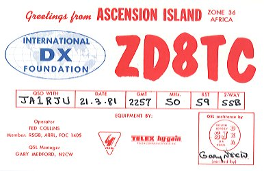
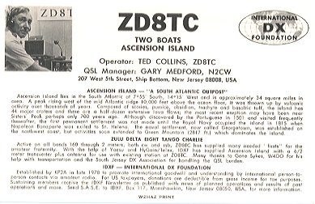

話題の局・QSL
ZD8TC・Ascension I.


1981/82年当時、Ascension I.からアクティブにQRVしていたZD8TC・Ted。
JAから初のQSOとなったTedにJAの有志からTS-600とリニアーが寄贈された。 Tedは、それまで使っていたゴンセット製の真空管式トランシーバーをSt.Helena島のZD7IPに譲ったが、 QRHの激しいこのRigを使ってQRVしていたZD7IPとQSOしたJA局は居なかった。
Back to QSL Album